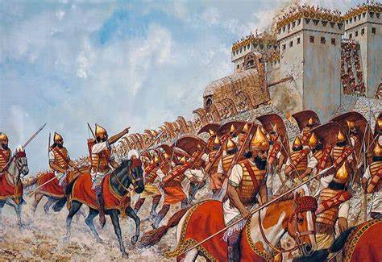

The Akkadian Empire, existing from around 2334 to 2154 BCE, revolutionized warfare with a highly centralized military command. The emperor, including notable figures like Sargon of Akkad and his grandson Naram-Sin, directly controlled the army. This centralized control allowed for quick mobilization and efficient decision-making, crucial for maintaining the empire's expansive territories.
Unlike earlier Mesopotamian city-states that relied on part-time militias, the Akkadian Empire maintained a professional standing army. This full-time force was well-trained, disciplined, and dedicated to the emperor, providing a reliable and formidable military presence that could respond rapidly to threats or opportunities for expansion.
The Akkadian military was organized into specialized units, each with distinct roles:
Each unit's specialization allowed the Akkadian army to be versatile and effective in various battle scenarios.
The Akkadians had a dedicated engineering corps adept at constructing fortifications and siege machinery. They built siege ramps, battering rams, and other equipment necessary for breaching city walls. Their engineering expertise was crucial in the conquest of heavily fortified cities, allowing the Akkadians to expand and maintain control over vast territories.
The Akkadian soldiers were equipped with advanced bronze weaponry, which included swords, spears, and daggers. These weapons were more durable and effective than the copper tools used by many of their adversaries. The Akkadians also utilized composite bows, which offered greater range and power. Their soldiers wore protective gear, including helmets and armor, made of leather or bronze, enhancing their survivability in combat.
The military achievements of the Akkadian Empire set a precedent for future empires in Mesopotamia. Their model of a centralized, professional army influenced later civilizations, such as the Assyrians and Persians. The Akkadian approach to warfare, including their use of advanced technology and strategic planning, left a lasting impact on the history of military strategy in the ancient world.
